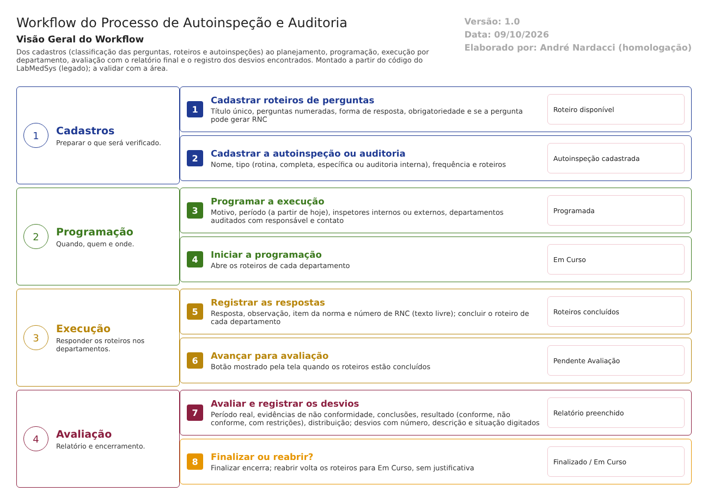
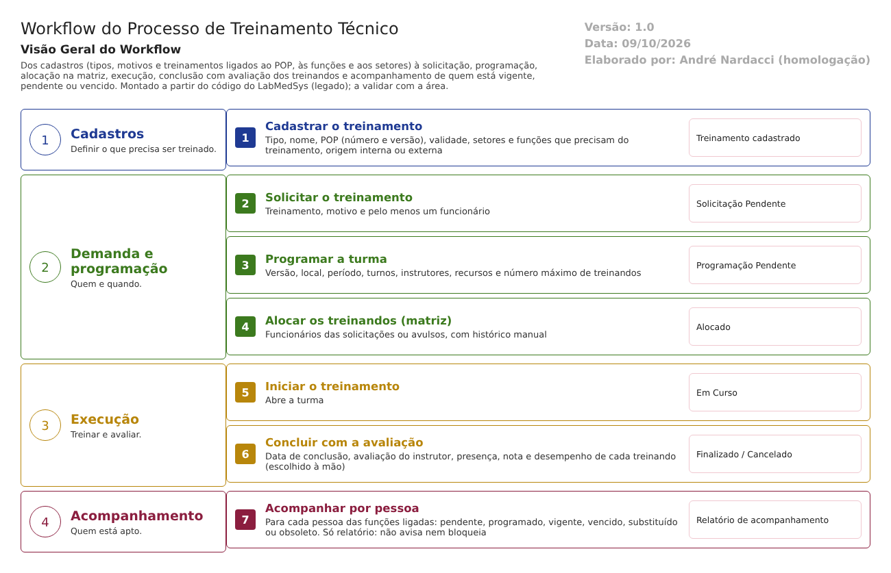

Garantia da Qualidade
Desvios e CAPA, controle de mudanças, autoinspeção e auditoria, treinamento e assuntos regulatórios. Reconhecimento, mapa de conformidade com a RDC 658/2022, os cinco fluxos (desvios e CAPA, controle de mudanças, autoinspeção, treinamento e assuntos regulatórios), as regras de negócio, o inventário das 67 telas, a matriz de permissões, o modelo de dados, a análise de risco e o plano de testes prontos. Testes de tela: rodada 1 em 12/10/2026, com 12 casos de prioridade Alta (1 passou, 10 falharam, 1 bloqueado). Confirmados na tela: plano corretivo aprovado com ação pendente; mudança liberada sem parecer das áreas e aprovada apesar de área que não aceitou; plano de mudança finalizado sem a ação executada; cancelamento do desvio e aprovação final do produto fora do histórico. Ponto bom: a data de abertura do desvio é a do servidor. O efeito de um desvio sobre o lote não pôde ser testado (a busca de produto no desvio não devolve nada no ambiente).
- Reconhecimento
- Fluxos
- Testes
- Entregáveis
Comece aqui
O roteiro deste módulo tem 3 partes e 28 documentos, do primeiro (Desvios e CAPA) ao último (Resultado da rodada 9). Leia na ordem: cada documento leva ao próximo.
Sobre o módulo
Vale para o sistema entregue e para a versão nova.
Siga o processo
Como o trabalho anda, etapa por etapa, na ordem em que acontece. Onde há roteiro, ele vem logo depois do fluxo.
 Desvios e CAPA
Desvios e CAPAPasso a passo para testar (13 telas)
- Relatório de Desvios
- Registro Ação Corretiva Imediata
- Pré Avaliação Relatório Desvios
- Avaliação Área
- Avaliação Relatório Desvios
- Relatório de CAPA
- Plano de Ação Corretiva
- Execução do Plano de Ação Corretiva
- Monitoramento do Plano de Ação Corretiva
- Plano de Ação Preventiva
- Execução Plano de Ação Preventiva
- Monitoramento do Plano de Ação Preventiva
- Acompanhamento RD e Controle de Emissão de RNC

Autoinspeção e auditoria
Treinamento técnicoO ideal: como deve funcionar
Como o módulo deve trabalhar para atender à ANVISA: funções, comportamento, integrações com os outros módulos e papéis. Mostra o que manter, corrigir e acrescentar.
ANVISA: norma e risco
O que a ANVISA exige e onde está o risco.
Requisitos e dados
Para a equipe de desenvolvimento: requisitos corrigidos, comparação entre as versões, modelo de dados e integrações.
Legado
O sistema entregue pelo fornecedor: como é hoje.
Telas e situação
O que existe no sistema entregue, como as telas se organizam nos menus e o que funciona.
Regras e uso
O que o sistema entregue faz com cada dado, quem pode fazer o quê e como usar.
Testes e defeitos
O que foi testado nas telas do sistema entregue, o que falhou e como corrigir.
iLabPharma Novo
A versão nova, por menu do sistema.
Fim do roteiro deste módulo
Segue o caminho do processo: Próximo módulo: Controle de Documentos →
Antes deste: Controle da Qualidade